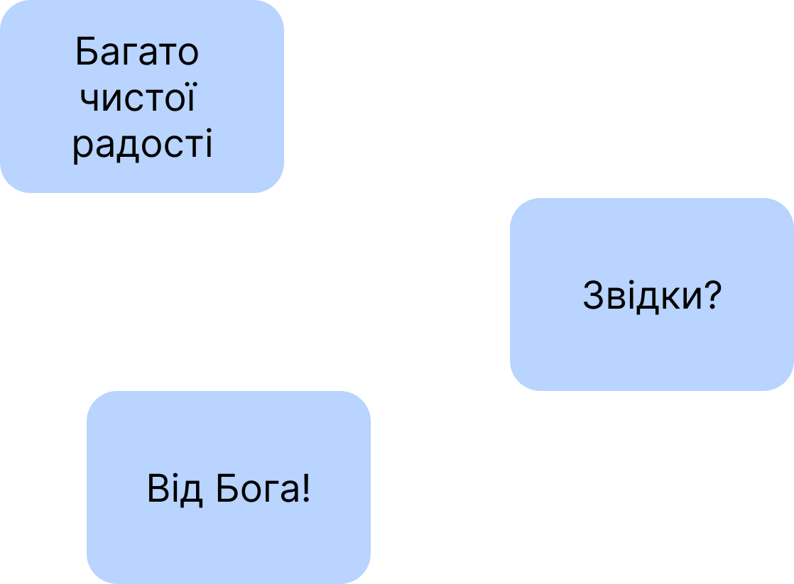

Слава Ісусу Христу!
🌞
Оскільки у працях, опублікованих за посиланнями:
https://churchandsociety.org.ua/pdf/projects/zbirnyk.pdf
https://oleksandr-zhabenko.github.io/uk/commentaries/17082024.html
https://oleksandr-zhabenko.github.io/uk/commentaries/27112024.html
написано, що вживання прийменників має важливе значення для правильного розуміння важливих і актуальних питань, зокрема питання влади, то пишу коментарі щодо вживання саме цих прийменників. Як порада щодо читання написаного — можна читати вірш у перекладі чи/та оригіналі (хто має таку змогу), а тоді відповідний коментар щодо прийменників тут. Далі потрібно зрозуміти, якої частини вірша стосується коментар, а також обдумати, що суттєве для розуміння він стверджує — чи рідше — заперечує. Таке вдумливе читання допомагає поглибити розуміння і береже від згаданих помилок.
Рання:
Більше про читання дивіться за посиланнями:
https://oleksandr-zhabenko.github.io/uk/commentaries/22042025.html
https://oleksandr-zhabenko.github.io/uk/commentaries/18042023.html
https://oleksandr-zhabenko.github.io/uk/commentaries/07052024.html
Літургія:
Римлян X, 1, 10 — 'εἰς σωτηρίαν' - 'eis soterian' - на спасіння; для спасіння; у спасіння
. Прийменник 'eis' підкреслює рух і мету призначення.
Про Божий задум щодо ревності та заздрості дивіться за посиланням:
https://oleksandr-zhabenko.github.io/uk/commentaries/03072025.html
Римлян X, 4, 10 — 'εἰς δικαιοσύνην' - 'eis dikaiosynen' - на праведність
. Прийменник 'eis' підкреслює рух і кінцеву мету.
Римлян X, 5 — 'ἐκ νόμου' - 'ek nomou' - від Закону
. 'ἐν αὐτῇ' - 'en aute' - у ньому; ним
. Тут обидва варіанти перекладу можливі і несуть різний смисл. Перший означає, що людина перебуватиме у Законі як середовищі існування, життя
(доволі логічне продовження початку вірша), а другий означає, що Закон дає життя як добре, повноцінне, наповнене, праведне
.
Римлян X, 6 — 'ἐκ πίστεως' - 'ek pisteos' - від віри
. Праведність, яка є органічним продовженням і виявом, розвитком віри. Дивіться більше за посиланнями:
https://oleksandr-zhabenko.github.io/uk/commentaries/30062025.html
https://oleksandr-zhabenko.github.io/uk/commentaries/29062025.html
https://oleksandr-zhabenko.github.io/uk/commentaries/22032025.html
https://oleksandr-zhabenko.github.io/uk/commentaries/10062025.html
https://oleksandr-zhabenko.github.io/uk/commentaries/18062025.html
https://oleksandr-zhabenko.github.io/uk/commentaries/21062025.html
https://oleksandr-zhabenko.github.io/uk/commentaries/28062025.html
https://oleksandr-zhabenko.github.io/uk/commentaries/25062024.html
https://oleksandr-zhabenko.github.io/uk/commentaries/06072024.html
Римлян X, 6, 8, 9 — 'ἐν τῇ καρδίᾳ' - 'en te kardia' - у серці
(як певному просторі та часі дії). 'εἰς τὸν οὐρανόν' - 'eis ton ouranon' - на небо; у небо
. Куди. Мається на увазі духовне, невидиме небо.
Римлян X, 7, 9 — 'εἰς τὴν ἄβυσσον' - 'eis ten abysson' - у безодню
. Куди. Мається на увазі місце мук для бісів. 'ἐκ νεκρῶν' - 'ek nekron' - з мертвих
. Прийменник 'ek' тут означає, не що Христос походить з мертвих, а що Він від них
вийшов, воскреснувши. Тобто вказує на перехід від мертвих до живих (звідки).
Римлян X, 8, 9 — 'ἐν τῷ στόματί' - 'en to stomati' - в устах; у мовленні
.
Писав раніше, тут процитую:
Потрібно зупинитися принаймні на віршах Римлян X, 9-10, які особливо часто різні християни розуміють частково і неправильно, наводячи їх для виправдання образу власної побожності (про що пророчо апостол застерігає на початку глави). Ключовим є розуміння
віри серця та
сповідання устами.
Віра серця тут синонім праведності, а отже, Євангельської чистоти (усього) серця, а
уста — власне не лише уста, але все, у чому проявляється назовні життя людини. Це місце не має смислу
достатності лише звуженого розуміння серця та вуст, воно не дозволяє те, що не дозволяють і всі інші місця Писання, але використовує
ключові поняття для підкреслення доступності та виразної образності — усі люди можуть спастися,
юдейська праведність нічим принципово не відрізняється від
еллінської чи
скіфської, бо усі люди подібні, а праведність є даром Божим усім людям у Христі
.
(кінець цитати)
Іншими словами, Павло ніяким чином не зменшує, не скорочує
усього, що говориться в Писанні, але підкреслює, що стосується чого (що віра стосується серця, а визнання — вуст у широкому розумінні), що потрібне поєднання віри та сповідання віри, щирості та праведності, цілісності та відкритості.
Можна було б так сказати: Якщо будеш щирим у своїй праведності до найглибших сфер душі, і будеш виявляти свою істинну щирість у добрі, у справах, у словах, то спасешся
. Можна ще так: Якщо будеш мати цілісність у Христі, будучи праведним як зовні, так і внутрішньо, і будеш цю цілісність виявляти, будучи відкритим до людей і до їх спасіння, виявляючи цим апостольську любов і Христове благовістя, то спасешся
.
Подібні приклади можна продовжити, вони просто іншими виразами і трохи більш складними і сучасними фразами передають той же смисл.
Більше про читання з Апостола дивіться за посиланнями:
https://oleksandr-zhabenko.github.io/uk/BesidaNaSlovaCHrystaStrakh.html
https://oleksandr-zhabenko.github.io/uk/commentaries/09072023.html
https://oleksandr-zhabenko.github.io/uk/commentaries/28072024.html
Матфея VIII, 28 — 'εἰς τὸ πέραν εἰς τὴν χώραν τῶν Γαδαρηνῶν' - 'eis to peran eis ten khoran ton Gadarenon' - на той бік до землі Гадаринської
. Куди. 'ἐκ τῶν μνημείων' - 'ek ton mnemeion' - з могил; з місць поховання
. Прийменник 'ek' підкреслює, що вони не покинули могили, вийшли, наче залишившись їх мешканцями. Сучасною мовою — наче зомбі
.
Матфея VIII, 29, 31 — фраза Що нам і тобі?
багато разів зустрічається в Євангеліях, вказує на відсутність зв'язку
.
Матфея VIII, 30 — 'ἀπ’ αὐτῶν' - 'ap auton' - від них
. Прийменник 'ap' як форма 'apo' перед наступним голосним вказує на те, що біснуваті не вписувалися у загальну картину
пасовища — багаті і численні стада свиней і на їх фоні наче мертві
біснуваті.
Матфея VIII, 31 — 'εἰς τὴν ἀγέλην' - 'eis ten agelen' - у те стадо
. Прийменник 'eis' підкреслює рух всередину
. Куди.
Матфея VIII, 32 — 'εἰς τοὺς χοίρους' - 'eis tous khoirous' - у тих свиней
. Куди. 'εἰς τὴν θάλασσαν, καὶ ἀπέθανον ἐν τοῖς ὕδασιν' - 'eis ten thalassan, kai apethanon en tois hydasin' - у море, і потопився у воді
. Куди кинувся і де потонув.
Матфея VIII, 33 — 'εἰς τὴν πόλιν' - 'eis ten polin' - у те місто
.Куди.
Матфея VIII, 34 — 'εἰς ὑπάντησιν τοῦ Ἰησοῦ' - 'eis hypantesin tou Iesou' - назустріч Ісусові; для зустрічі Ісуса
. Прийменник 'eis' є складовою сталого вислову, вказує на мету та характер руху. 'ἀπὸ τῶν ὁρίων' - 'apo ton horion' - з їх краю, території
. Прийменник 'apo' підкреслює намагання мешканців вигнати геть Ісуса звідти.
Матфея IX, 1 — 'εἰς πλοῖον' - 'eis ploion' - у човен
. Куди (тут просто вид транспорту, якийсь човен
). 'εἰς τὴν ἰδίαν πόλιν' - 'eis ten idian polin' - у Своє власне (рідне) місто
.
Чудо вигнання бісів з Гадаринських біснуватих. Добре відоме місце, зупинюся на тому, що біси визнавали, Ким є Ісус. Це можна розуміти так, що вони знали, Ким Він є (Господь їм відкрив), а можна так, що вони здогадувалися (Господь їм не відкрив), або навіть намагалися обманути слухачів, вдаючи, що знають (хоча це загалом малоймовірно). Висновок з того проситься такий: не потрібно довіряти лукавим духам, хоч би навіть вони казали у якийсь час і правду.
Також багато-хто звертає увагу, що Господь дозволив бісам увійти у стадо свиней, а отже, біси не можуть нашкодити навіть тваринам (а тим більше — людям) без попущення Божого.
Може видатися дивним, що Господь допускає стаду втопитися. Але тут якраз важливим є те, що люди пізнають так, Ким Він є, в іншому Євангелії описується, що потім проповідь зціленої людини від бісів створила добрий ґрунт для пізнішого прийняття Ісуса.
Також питання, чи був це один біснуватий, чи двоє — скоріше, що двоє, просто один з євангелистів записав історію з вуст свідка, який описав спрощено цю подію (таке часто буває у розповідях свідків).
Більше про читання з Євангелія дивіться за посиланнями:
https://oleksandr-zhabenko.github.io/uk/commentaries/09072023.html
https://oleksandr-zhabenko.github.io/uk/commentaries/28072024.html
Святим отцям перших 6 Вселенських соборів:
Про читання з Апостола дивіться за посиланнями:
https://oleksandr-zhabenko.github.io/uk/commentaries/06122024.html
https://oleksandr-zhabenko.github.io/uk/commentaries/14052023.html
https://oleksandr-zhabenko.github.io/uk/commentaries/22052023.html
Більше про читання з Євангелія дивіться за посиланням:
https://oleksandr-zhabenko.github.io/uk/commentaries/18042025.html
Слава Тобі, Боже наш, слава Тобі!